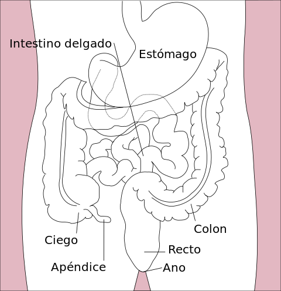

El intestino grueso es la última porción del tubo digestivo, formada por el ciego,
el colon, el recto y el canal anal. El intestino delgado se une al intestino grueso en el abdomen inferior derecho a
través de la válvula ileocecal. El intestino grueso es un tubo muscular de aproximadamente un metro y medio de largo.
La primera parte del intestino grueso se llama ciego.
